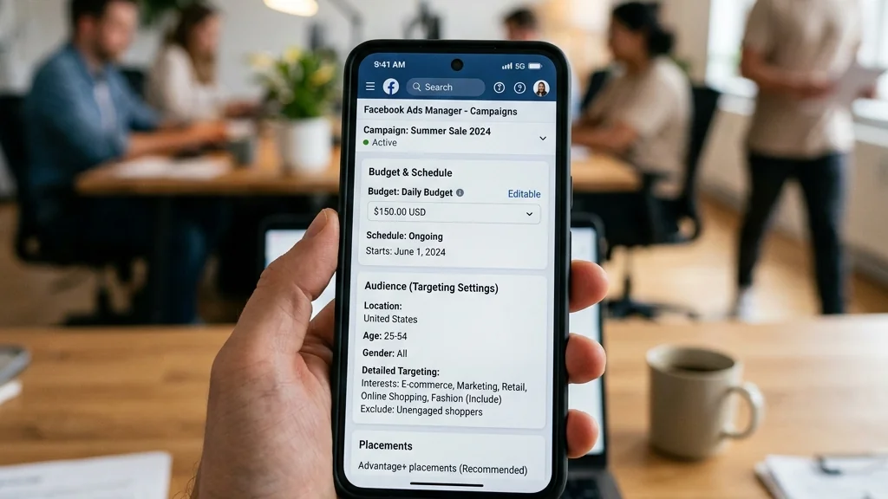

Introduction : Les pièges des publicités sur les réseaux sociaux
Même les annonceurs expérimentés peuvent commettre des erreurs coûteuses dans leurs campagnes Social Ads. En 2026, avec l'évolution des algorithmes et des comportements des utilisateurs, il est crucial d'éviter ces écueils. Voici les 10 erreurs les plus fréquentes et comment les corriger.

1. Négliger le ciblage d'audience
Une erreur classique : cibler trop large ou trop restreint. Utilisez les données de votre CRM, le pixel et les audiences similaires pour affiner votre ciblage. Évitez de vous fier uniquement aux données démographiques.
Quieres aplicar estas estrategias sin esfuerzo? Nuestros expertos de DatRey se encargan.
2. Ignorer les tests A/B
Ne pas tester plusieurs versions de vos annonces (visuels, textes, appels à l'action) limite votre optimisation. Mettez en place des tests A/B systématiques pour identifier les combinaisons gagnantes.
3. Utiliser des visuels de mauvaise qualité
Des images floues, mal cadrées ou non conformes aux spécifications des plateformes nuisent à la perception de votre marque. Investissez dans des créations professionnelles.

4. Oublier l'optimisation mobile
La majorité des utilisateurs naviguent sur mobile. Assurez-vous que vos annonces et vos pages de destination sont parfaitement adaptées aux écrans mobiles.
5. Ne pas définir d'objectif clair
Lancer une campagne sans objectif précis conduit à des résultats flous. Choisissez un objectif aligné avec votre stratégie marketing (notoriété, trafic, conversions).
6. Sous-estimer l'importance du texte
Un texte accrocheur est essentiel. Utilisez des titres percutants, des descriptions concises et des appels à l'action convaincants. Respectez les limites de caractères.

7. Ne pas suivre les performances
Ignorer les métriques (CTR, CPC, ROAS, fréquence) vous empêche d'optimiser. Consultez régulièrement vos rapports et ajustez vos campagnes en conséquence.
8. Abandonner trop tôt
Les campagnes ont besoin de temps pour être optimisées par l'algorithme. Laissez vos annonces tourner au moins 3 à 5 jours avant de les modifier.
9. Négliger le retargeting
Ne pas cibler les visiteurs de votre site ou les personnes ayant interagi avec votre marque est une occasion manquée. Mettez en place des campagnes de retargeting pour améliorer vos taux de conversion.
10. Copier la concurrence sans réflexion
S'inspirer de la concurrence est utile, mais copier sans adaptation est risqué. Testez vos propres hypothèses et créez une stratégie unique.

Conclusion : Optimisez vos campagnes avec DatRey
En évitant ces erreurs, vous maximiserez l'efficacité de vos campagnes Social Ads. Pour un accompagnement personnalisé, faites appel à l'agence DatRey, experte en publicité digitale au Maroc.